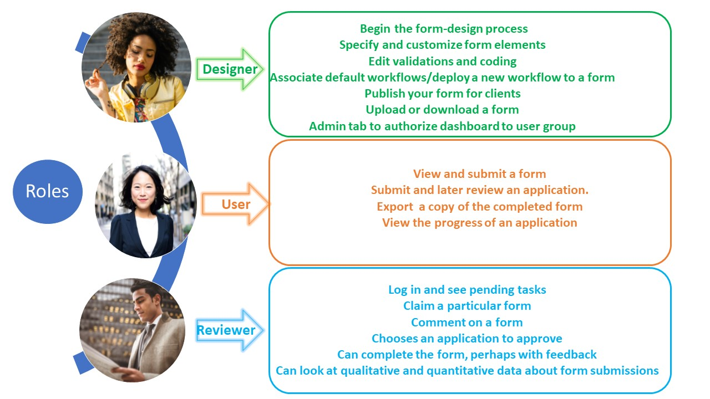
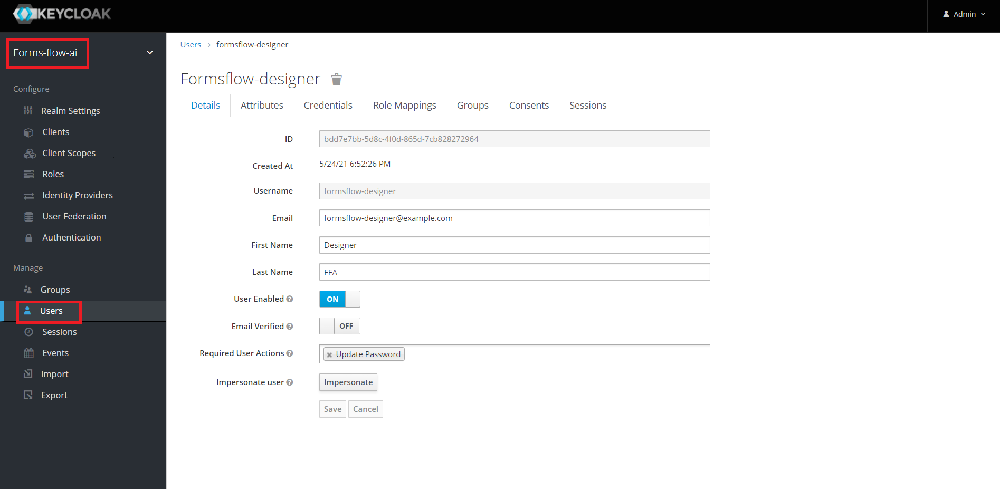
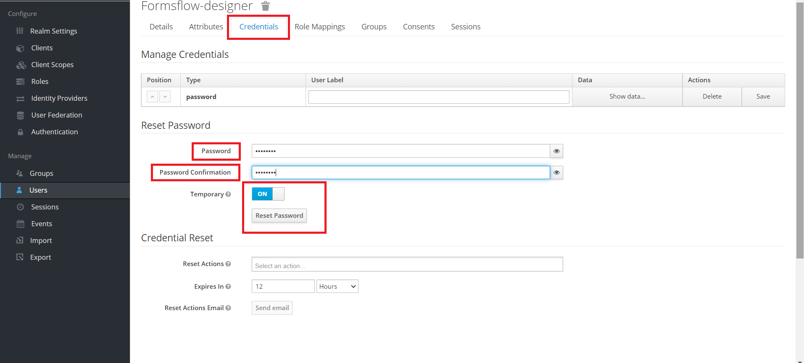
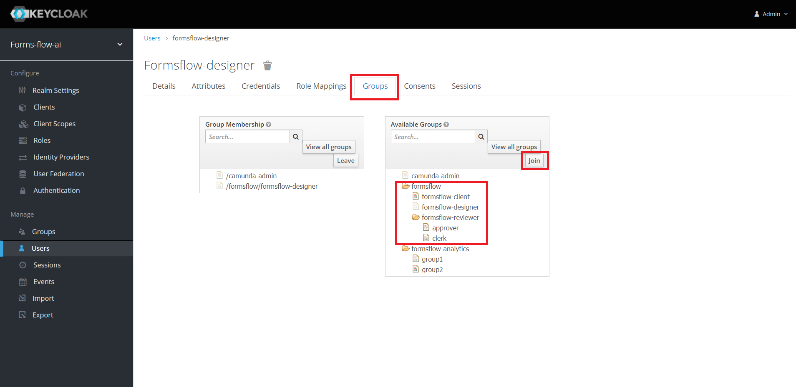

<article class="docs-article">
    <section class="docs-section">
        <div>
            <h1>User Roles Explained</h1><br>
            <hr><br>
          
            <p>Once a Designer has created and published applications for use in formsflow.ai, online applications can
                be submitted by end users (Clients) to access access City services. An email is triggered when an
                application is submitted to alert the appropriate staff user (Reviewer) to review the application. The
                reviewer has several options when completing their tasks. They can approve, disapprove, or return the
                form to the client for any additional information needed to ensure that the application is complete
                before it can be approved.</p>
            <p>We can broadly divide the actors or users involved as:</p>
            </img><br><br>
            <p>Based on the actors involved, the user, group, and role creation and management are performed in Keycloak
                by the Keycloak administrator. </p><br><br>
                <h2>How To Configure User Roles in formsflow.ai</h2><hr><br>
                <ol>
                    <h3><li> Create Users</li></h3>
                    <p>Users are created in Keycloak by choosing the appropriate realm and navigating to the user menu  </p>
                    </img><br><br><br>
                    <h3><li> Set User Credentials</li></h3>
                    </img><br><br><br>
                    <h3><li> User Group Mapping</li></h3>
                    </img><br><br><br>
                </ol>
                


        </div>
    </section>
</article>